Abir Mehta
The first of Kepler’s laws states that the orbit of a planet around its Sun generates an elliptical path, with the Sun at one of the foci of the ellipse.
By the way, if you are unfamiliar with ellipses and their respective terminology (which we will be discussing in detail throughout this law), you should check out the Vectors & Ellipses section for appropriate background! We lean on that vocabulary constantly here, especially the semi-major axis $a$ and the eccentricity $e = c/a$.
Well, for most of us, this law is very hard to rigorously prove analytically. You would have to solve the differential equation of motion for the orbit’s radius as a function of its angle, and then show that what falls out of it is exactly the polar equation of an ellipse. That is well beyond the scope of our discussion (a phrase you’ve heard a few times by now). The entire derivation isn’t particularly challenging to think of, but simply mind-bendingly tedious with the amount of algebra you have to do, building up from nothing!
A simpler way to visualize this law is through the use of a computer simulation in Python, which is exactly what we will be doing on this page. We’ll show Kepler’s 1st Law, but in an entirely different way, which (in my opinion) can be just as rewarding.
Here’s the idea. We give a planet a starting position and a starting velocity, and we tell the computer exactly one physical rule: Newton’s law of gravitation. That’s the only rule it gets, and we say nothing at all about ellipses. Then we let it take thousands of tiny steps forward in time and plot every position the planet visits. If Kepler was right, an ellipse should show up on your screen with the Sun at a focus, purely because of the force law.
Since this page is a bit longer than the other two laws, here’s where we’re going, so you know where each piece fits:
Then we build the code in Section 7 and run it.
The entire gist of proving Kepler’s 1st Law is showing how the differential equation of motion leads to the familiar ellipse. Now you may be asking: what differential equation of motion? We can develop it directly from Newton’s 2nd Law,
We consider a planet of mass $m$ in orbit about a star of mass $M$, which sits at the origin $(0,0)$ of our Cartesian plane. I’m sure you guys know the magnitude representation of Newton’s law of gravitation:
where $G$ is the gravitational constant and $r$ is the distance between the two bodies. In vector form, which you met back on the 2nd Law page, we can write this as
Here, $\hat{r}$ is a unit vector that points along the line connecting the two bodies, and the negative sign simply indicates that the force of gravity is inward, relative to the origin. Refer to the Vectors & Ellipses section (or the 2nd Law page) if any part of this confuses you.
We assume that the planet is given some initial tangential velocity so that it sets into a stable orbit. The only force that acts on the planet is the gravitational force $\vec{F}_g$ as described above. Using Newton’s 2nd Law, we then have
$\vec{a}$ might as well be written as $\mathrm{d}^2\vec{r}/\mathrm{d} t^2$. So we can now write
Notice that the planet’s mass $m$ cancelled clean off both sides! This tells us that the orbit doesn’t care how heavy the planet is, only how heavy the star is.
The whole essence of proving Kepler’s 1st Law is simply to solve this differential equation and show that the vector $\vec{r}$ traces out an ellipse over time, with the Sun at one of the foci of that ellipse.
A computer can’t do much with $\hat{r}$ directly, so let’s write everything out in coordinates.
The planet’s position is $(x,y)$, so $r^2 = x^2+y^2$, or $r = \sqrt{x^2+y^2}$. We then see that the unit vector $\hat{r}$ has components $(x/r,\, y/r)$. You can verify yourself that this is indeed a unit vector with magnitude 1! So now we get two differential equations, one in $x$ and one in $y$:
Remember that these are two separate differential equations, with the $x$ and $y$ components of position each having their own solution. These two lines are the entire physics of our simulation, so keep them handy; we’ll be referring back to them a lot.
One thing to notice before we move on: these two equations are coupled. The $x$ equation contains $r$, and $r$ depends on $y$. So we can’t just solve one and then the other, we have to advance both at the same time.
Obviously, the planet simply doesn’t teleport into some idealized ellipse. Equations (1) and (2) describe every possible orbit around our star, from a tight little circle to a long skinny cigar. Which one we actually get is decided entirely by where we drop the planet and how hard we push it.
So the shape of the orbit comes out of the initial conditions rather than the force law, which means picking those conditions carefully is most of the work here.
So first, suppose the Sun sits at the origin $(0,0)$ for simplicity. The planet starts a distance $x_0$ to the right of the origin, lying on the $x$-axis. And suppose also that we give the planet a little ‘kick’ directly upward, so it sets off with velocity $\vec{v_0} = (0, v_{y0})$. For simplicity, we’ll have our planet begin at the perihelion (the point of closest approach).

Keep in mind that we are developing Python code that keeps track of four key quantities: $x$, $y$, $v_x$, $v_y$. Even if you have no past computational background, I have faith that you will make this happen!
Now, say we want an ellipse with a particular semi-major axis $a$ and a particular eccentricity $e$. From the Vectors & Ellipses section, the center of the ellipse sits a distance $c$ from the focus, and the far end is a distance $a$ from the center. So measuring from the focus, the near end of the ellipse sits at $a - c$, and since $e = c/a$ gives us $c = ae$, we have
Thus, our starting distance is pinned down:
Half of the job is now done: we know where to start the planet for a given $(a,e)$, and we know the kick points straight up. What we don’t know yet is how big that kick should be. Kicking it too hard or too gently can distort our desired parameters $(a, e)$ off the bat. Surprisingly, there’s only exactly one speed that gives us the ellipse we asked for.
Unfortunately, the hardest part about controlling the shape of the orbit in code is deriving a formula that gives you that correct initial velocity. That’s what the next section is for.
The Vis-Viva equation gives us the speed of an orbiting body at any point of its orbit. Once we have it, we plug in $r = a(1-e)$ and read off the initial velocity kick $(0, v_{y0})$ that sets our planet into an elliptical orbit of semi-major axis $a$.
How do you want to take this one?
The total energy $(E)$ of the orbiting planet is a sum of its kinetic $(K)$ and potential $(U)$ energy,
or
Every term here carries a factor of $m$, and as we just saw, the planet’s mass shouldn’t matter to the orbit anyway. So let’s divide it out. Dividing the above energy equation by $m$ gives us the specific mechanical energy $(\epsilon)$, which represents the energy per unit mass:
Because the total mechanical energy is conserved, the specific mechanical energy remains constant throughout the entirety of the orbit.
For an elliptical orbit of semi-major axis $a$ and eccentricity $e$, let’s look at the two turning points where the velocity vector is perfectly perpendicular to the position vector. These points are at the perihelion (where we have initially placed the planet, closest point of approach, $r_p = a(1-e)$) and the aphelion (the point of farthest approach, $r_a = a(1+e)$).
Recall that the angular momentum vector has magnitude $L = mvr \sin \theta$, where $\theta$ is the angle between the momentum and position vectors. At both turning points $\theta = 90^\circ$, so $\sin\theta = 1$ and this collapses to just $L = mvr$. Because angular momentum is conserved (you showed on the 2nd Law page that gravity exerts no torque about the star!), we can equate the respective magnitudes at the perihelion and aphelion:
As we mentioned, the specific mechanical energy $\epsilon$ is constant throughout the orbit, so it must be equal at the perihelion and the aphelion:
Only one unknown is left in there. By isolating $v_p^2$, we find that
We substitute this expression for $v^2_p$ back into the original specific energy evaluated at the perihelion point:
The $(1-e)$ cancels against the $(e-1)$ up to a sign, and carrying out the algebra we obtain the result
This highlights a beautiful property of orbital mechanics: the total specific orbital energy depends strictly on the mass of the central star and the size of the orbit’s semi-major axis $(a)$, completely independent of the eccentricity $e$! A nearly circular orbit and a long skinny one with the same $a$ carry exactly the same energy per unit mass. It’s also the reason the Vis-Viva equation comes out as clean as it does.
The negative sign, by the way, is the signature of a bound orbit. A planet with $\epsilon \geq 0$ has passed the escape speed, and its path is no longer periodic.
Now, we are in the position to assemble the Vis-Viva equation. We have two expressions for the same conserved quantity, so set them equal:
After isolating $v$, we finally arrive at the Vis-Viva equation:
The Vis-Viva equation gives the magnitude of the velocity at any point of the planet’s orbit in terms of the semi-major axis $a$ and its variable orbit radius $r$. Notice that there’s no $e$ anywhere in it! It relates the speed to the current radius and the semi-major axis, and that’s all. Eccentricity never enters.
So how does the eccentricity get into our simulation at all? Through the starting distance, and nowhere else.
Our initial velocity kick $(0, v_{y0})$ occurs at a position $x_0 = a(1-e)$ to the right of the Sun, and since the kick is entirely in the $y$-direction, $v_{y0}$ is the full speed at that moment. Plugging into the Vis-Viva equation, we obtain the long-desired result
So $e$ shows up twice in our setup, and both times it’s an initial condition: once in $x_0 = a(1-e)$, and once in the kick above. Those two numbers are everything our code needs in order to produce the ellipse we asked for.
We have the physics and we have the initial conditions. The one thing missing is time. Equations (1) and (2) give us the planet’s acceleration right now, but what we actually want to plot is its position over a whole orbit. So we need a way to get from one to the other.
We want to plot the position over time, but in order to do so, we first need to find the velocity at each time during the orbit. Mathematically, let us see how this arises.
As an example, we use the acceleration in the $x$ direction $a_x$. Start with the definition of acceleration,
Rearrange so that
Now, suppose that the velocity in the $x$ direction at time $t$ is $v_{x,i}$ and at time $t+\Delta t$ it is $v_{x,f}$. The change in velocity $\Delta v_{x} = v_{x,f} - v_{x,i}$ is $a_x \Delta t$, as suggested by the above equation. Rearranging, we find that
This is effectively how Euler’s method works! We start with some initial positions and velocities. Then, according to the differential equation, we calculate the instantaneous acceleration for a time $t$. We use that quantity of acceleration to calculate the next value of velocity at a time $t+\Delta t$. Since we have a small $\Delta t \sim \mathrm{d} t$, our calculations can be incredibly precise, because we update our values so often.
Now here is the natural next question: if we have the velocity for all the times $t$ in our period (obtained from the method shown above), how can the position be obtained next? Use the definition of velocity and the same thought process shown above to arrive at your conclusion.
Okay, now that you’ve (hopefully) shown what was asked, we’ll have four relations that will be useful in our code:
Take a close look at those last two lines: the position update uses $v_{x,f}$ and $v_{y,f}$, the new velocities, not the old ones. So the order we do things inside our loop actually matters. Each time through, we compute the acceleration from the current position, then update the velocities, and only then update the positions using those brand-new velocities.
Do not skip past this one. If you update the position first, using the old velocity, the simulation slowly leaks energy and your “ellipse” spirals outward into a spring instead of closing up on itself. Updating the velocity first keeps the orbit stable over many periods, even with identical physics and an identical $\Delta t$.
The programming language we will be using to plot the elliptical orbit is Python! Python has many numerical applications in scientific computing, and you should try to get familiar with it if you’d like to work in STEM-related fields.
Here, we want to plot an arbitrary ellipse and control its semi-major axis and eccentricity.
We will be working in a Jupyter Notebook (a .ipynb file), where our code will be pieced up into seven main cells. A cell is just a block of code that you run on its own by pressing Shift+Enter. Cells share memory, so a variable you define in one is still around in the next, which lets us build the program in stages and check each stage before moving on.
Here are the cells in order:
Some of these cells will be either fully given, partially given, or you will have to figure them out on your own! Our overall goal for this step-by-step run-through is to plot the elliptical orbit of Mercury about the Sun.
One rule for the whole program: everything stays in SI units (meters, kilograms, seconds) until the very last plot. We convert to AU once, at the end, just for the axis labels.
At the end of the process, I’ll hand you a problem to try on your own, for a different planet in our solar system.
One quick thing before we start writing. The names below are just the ones I happened to pick—Python doesn’t care what you call things. If vx means nothing to you and speed_x means something, use speed_x. Type your own names into the boxes and every code block on the rest of this page will rename itself to match, so whatever you write stays consistent from the first cell to the last.
Constants
Orbit
Position & velocity
The force law
Time
Trajectory storage
Every code block below is a real editable cell—click into it and type. Shift+Enter runs it in the Python kernel at the bottom of this page. Renaming a variable rewrites any cell you haven’t touched yet; once you’ve typed in a cell it’s yours, and Revert puts the starting text back.
Here, we’ll import the various Python packages needed for the computing and plotting. Don’t worry, I got this!
Quickly: numpy handles the arrays we’ll store our results in, matplotlib does the plotting, and the last two are what let us animate the orbit inside the notebook instead of just showing a still picture.
Now, as you know, the calculations involve many constants including $G$, the gravitational constant, $M$, the mass of the Sun, and the unit of an AU. Make sure you label the units by their name and units on the right through a comment. As an example, this is how you set up a quantity in Python:
Everything after the # is a comment, which Python ignores completely; it’s only there for humans reading your code. Always label your constants like this.
Search up the quantities for each of the asked constants, and make sure they are in SI units!
Now let us set the semi-major axis and the eccentricity of the orbit. Through a quick Google search, the eccentricity of Mercury’s orbit is 0.206 and semi-major axis 0.387 AU’s. Set up the orbit parameters in the following cell.
Watch your units here: $e$ is a bare number with no units at all, but $a$ has to come out in meters, so make sure the semi-major axis is written in terms of the AU quantity you defined in the last cell rather than just typing 0.387 on its own.
As we’ve discussed, we want our elliptical orbit to begin at the perihelion (point of closest approach, along the $x$-axis), and using ellipse geometry, this point is $a(1-e)$ to the right of the Sun. We have to set up two coordinates for both the position and the velocity, so that’s four variables in total.
Three of them are pretty much free (think about what “on the $x$-axis” and “kicked straight up” mean for the components you aren’t using). The fourth is the initial velocity from Section 5.5, and you’ll want np.sqrt() for the square root.
We will run the simulation for one full orbit, so we need the period $T$.
The period of an ellipse squared is proportional to the cube of its semi-major axis with the given proportionality constant (as you should’ve discovered in the derivation of Kepler’s 3rd Law):
Taking the square root on both sides yields
Set this value of a period inside Python. Note that numpy already has $\pi$ built in as np.pi, so you don’t need to type out a decimal for it.
How our code will work is by using Euler’s method for times throughout our period, continuously updating our values of velocity and hence position to trace out an elliptical orbit.
Anyways, we’d like to sample about a thousand consecutive values of time throughout our period. Under the code which sets the value of the period, write
This is our tiny time-step by which we will update the position and velocity coordinates, and it’s the $\Delta t$ from Section 6. We have 1000 values of time per period. When graphing this, the path will trace out a smooth elliptical curve. The more time values you sample, the better approximation your curve will be. Think about why this is true.
Next, we will set the number of values $N$ of position and velocity we’d like in our arrays (I will get to this in a moment). This should be the same amount of values as the number of time steps, 1000. Set this up beneath the dt code.
This is the interesting part, because now we have to write up Euler’s method for the differential equations (1) and (2), using the four update rules we found in Section 6.
First, let’s create arrays of $x$ and $y$, all filled with zeros. Arrays are basically fixed-length rows of numbers that Python can do math on all at once. We do this so that our code has somewhere to put the real values as it computes them; without this base array, our code would have no idea what to fill! We will have $N$ values of both $x$ and $y$, for $N$ time steps.
Write this in a new cell of your code:
This creates two arrays, both with $N$ zeros. This is our Storage.
Make sure you separate two things here, because this is where people tend to get stuck. The variables x and y hold where the planet is right now, and they get overwritten on every single step. The arrays xs and ys are the permanent record of everywhere it has been. We need both: the current position to compute the next step, and the full history to draw the orbit at the end.
Now let’s develop the Simulation Loop in a new cell of code. We are in the closing stretch!
Start with the following code. I will explain soon.
This loop runs through all $N$ time steps. range(N) means the counter i takes the values $0, 1, 2, \dots, N-1$, so the indented lines run $N$ times, once per step. At each step i, it takes the current position of the planet (x and y) and stores it into the i-th slot of our arrays. So xs[0] gets the planet’s starting $x$ position, xs[1] gets the next one, and so on, all the way up to xs[N-1]. The same idea applies for the $y$ coordinate. (Python starts counting slots at 0 rather than 1, so watch out for that.)
I’ll add a few variables; namely, the magnitude of the position vector, and the accelerations, velocities, and positions in the $x$ and $y$ directions.
Here is the most challenging part of the code. Using what you have been given about each of these variables, fill each of these out! As a hint, you can write the equality of these variables in terms of variables already written prior in the code, and variables in this for-loop.
A few pointers to keep you on track:
r is the planet’s current distance from the Sun, and you’ve got x and y.ax and ay come straight out of equations (1) and (2). They need r, which is why r gets computed first.vx = vx + ax * dt means “take the old vx, add $a_x \Delta t$, and store the answer back in vx.” In Python this is an instruction rather than an equation, and it’s exactly our $v_{x,f} = v_{x,i} + a_x \Delta t$ rule.If your plot comes out as a spiral instead of a closed loop, come back and check the order of those last four lines!
Great job! You have just figured out the most mentally challenging part of this derivation. The plotting code will automatically be in your notebook, one cell below the Simulation Loop. You don’t need to worry about this. It is mainly so that the graph has a nice animation, and has nothing to do with the actual physics. One thing it does do: it divides your stored positions by the AU constant, so your axes read in AU instead of hundreds of billions of meters.
Enjoy! You have just discovered Kepler’s 1st Law in an alternative way! How does it feel?
This is your code, not mine. Every cell above feeds into the block below—whatever is currently sitting in each one, in your variable names, in notebook order. Type in a cell or hit Run and this rebuilds itself on the spot, so it is always the newest version of everything you’ve written. When you’re happy with it, copy the whole thing into a Jupyter Notebook.
There should be an ellipse on your screen now, with the Sun at one focus. And look at what went into producing it. We never wrote down the ellipse equation anywhere in that code, and we never mentioned a focus to the computer. The only physics in the entire loop is $-GM/r^3$ times a position component, applied a thousand times in a row!
We did all of that for Mercury, and I handed you both of its orbital parameters. Now you get to do one on your own.
Look up Neptune’s eccentricity and semi-major axis (in AU) online. Then go back to your notebook, swap those two numbers into the Orbital Parameters cell, and run everything again. That’s the only cell you have to touch! The rest of the code doesn’t care which planet it is, since every other quantity is calculated from $a$ and $e$.
Before you hit run, try to predict two things:
Now run it and see how you did.
Every cell above runs down here. This is a real Python 3 environment (via Pyodide) with numpy and matplotlib loaded, running inside this page—nothing gets installed and nothing gets sent anywhere. Cells share one kernel, just like Jupyter, so a variable you define in one is available in the next.
It only has numpy and matplotlib, so the two animation imports (FuncAnimation and IPython.display) won’t work here the way they do in a real notebook. Everything up through the simulation loop runs exactly the same. To see the orbit here, use the still-picture version of the plotting cell:
Then run it in a proper Jupyter Notebook when you want the animation.